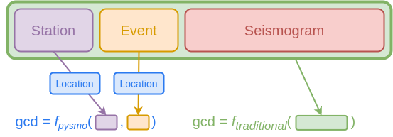

Types#
In the previous section we briefly mention that every time we define a class in Python, we also define a type. As these types may be structures containing other types (e.g. an array containing floats) they can be arbitrarily complex. We can therefore conveniently group any data into an object to store and process them(1). However, the best way to structure such an object for storage may often be at odds with the best way for processing. Thus, a Python type that is well suited for storing seismological data is sometimes not a good type for processing (and vice-versa). Pysmo avoids having to deal with this discrepancy by using different types for storing and processing data.
 Remember that objects are instances of a class.
Remember that objects are instances of a class.
The types used for storing data are the generic classes you may be used to using, whereas the types used for processing data are protocol classes. This may sound a bit confusing at first, but it is a simple matter of understanding the following points:
- Protocol classes themselves do not provide any functionality, thus the objects we pass as input to a function are indeed still instances of generic classes.
- The purpose of protocol classes is to provide a mechanism to define constraints on the generic classes.
- In order to use a generic class as input for a function that uses protocol classes in its type hints, the generic class must be a subclass of of the protocol class. You can therefore think of a protocol class as a sort of placeholder, which is substituted by a generic class when code is executed.
This chapter aims to explain the above points in greater detail, and to hopefully convince you that doing things this way is indeed a good idea!
Protocol classes#
Protocol classes were introduced in Python 3.8, and are
discussed in detail in PEP 544. In this
section, we explain why and how they are used in pysmo.
Why Protocol classes?#
In natural sciences we often process data that exist in one form or another in the physical world. We are of the opinion that Python types used for these data should not just be an arbitrary and abstract thing, but rather something that captures the essence of the data we are working with as they exist in nature. Of course, there are always going to be some abstractions. These already occur at the "pen and paper" stage, where we initially formulise problems, define models parameters etc. Pysmo types are defined with this early stage in mind. This makes it a lot easier to go from defining a problem, to coming up with a strategy or algorithm, to finally writing computer code. How these types are implemented is largely irrelevant at this early stage. Protocol classes are precisely for this use case - defining a type without implementing it.
How they work as pysmo types#
Let's see how to use protocol classes in pysmo with some example code that calculates the great circle distance (gcd) between the location of a station and an event source in two different ways: the traditional way, and the pysmo way. For the traditional approach we use the same data class(1) for both storage and processing. For the pysmo approach, we also use that data class for storage, but use pysmo types for processing instead.
- In this discussion "data classes" simply refers to a class containing (seismological) data, and not the Python dataclass.
For our example we assume the data we want to process is stored in a
sac file called
example.sac. Such files can be read in pysmo using the
SAC class. The following code shows what the traditional
way might look like:
from pysmo.classes import SAC
from pyproj import Geod # (1)!
def f_traditional(seismogram: SAC) -> float:
"""Calculate the great circle distance between the event and station.
Parameters:
seismogram: SAC seismogram object.
Returns:
Distance between the points in metres using the WGS84 ellipsoid.
"""
station_latitude = seismogram.stla # (2)!
station_longitude = seismogram.stlo
event_latitude = seismogram.evla
event_longitude = seismogram.evlo
if (
station_latitude is None # (3)!
or station_longitude is None
or event_latitude is None
or event_longitude is None
):
raise ValueError("One or more coordinates are None.")
g = Geod(ellps="WGS84")
_, _, distance = g.inv( # (4)!
station_longitude, station_latitude, event_longitude, event_latitude
)
return distance
sac = SAC.from_file("example.sac")
gcd = f_traditional(sac)
print(f"The great circle distance is {gcd} metres.")
- For this example we use the pyproj module for the distance calculation.
- The
SACclass gives us access to the header fields in sac files using their respective names as attributes. - Because the SAC variables for station and event coordinates are optional headers in the sac file file format, we cannot assume they contain values. Thus, we check they all contain valid data before continuing.
g.inv()returns azimuth, backazimuth, and distance. We use the single underscore (_) variable to indicate we are not interested in azimuth and backazimuth.
There are two things to note about the code above:
- When we think of sac files, we consider station and event information to be merely metadata for the included seismogram. Because of that there is an apparent disconnect between the purpose of the function (calculating gcd - an operation that requires coordinates) and the type of input variable. Consequently the above code may be difficult to understand without solid knowledge of the sac format.
- We must also deal with the idiosyncrasies of the sac file format. In this instance with the fact that very few of the many header fields are mandatory.
The same example code, but using pysmo types instead would look like this:
from pysmo import Location # (1)!
from pysmo.classes import SAC
from pyproj import Geod
def f_pysmo(location_1: Location, location_2: Location) -> float:
"""Calculate the great circle distance between two locations.
Parameters:
location_1: Location of the first point.
location_2: Location of the second point.
Returns:
Distance between the points in metres using the WGS84 ellipsoid.
"""
g = Geod(ellps="WGS84")
_, _, distance = g.inv(
location_1.longitude,
location_1.latitude,
location_2.longitude,
location_2.latitude,
)
return distance
sac = SAC.from_file("example.sac")
event = sac.event # (2)!
station = sac.station
gcd = f_pysmo(event, station)
print(f"The great circle distance is {gcd} metres.")
- One of the pysmo types is
Location, which is a simple protocol class with two attributeslatitudeandlongitude. We use this class for the type hints in our function. -
The
SACclass directly mirrors the structure of sac files, and as such would not work with pysmo types without some additional attributes to extend the functionality of the class. Two such attributes areeventandstation, which provide access to data stored in a sac file in a way that does work with pysmo types. For the purposes of this example, we can verify that these attributes are indeed subclasses (and thus instances) of the desired pysmo types:>>> isinstance(seismogram.event, Location) True
At a first glance the two scripts look quite similar. The function f_pysmo
is simpler and more concise than f_traditional, but there is a bit of extra
work involved before we call the function (the highlighted lines). Most
importantly though, f_pysmo is a function that calculates the gcd from a
much simpler and more meaningful input, which leads to the function as a whole
being more intuitive and easier to understand.
We can also illustrate the different ways the functions interact with
SAC objects in the two scripts graphically (note that we
ignore all header fields unrelated to station or event data in the figure):

Hopefully the above example convincingly demonstrates how pysmo types aid in
writing and understanding code. Another benefit of using pysmo types is their
stability; much like we can expect for something like a float, pysmo
types are unlikely to ever need to change (because they are kept as simple as
possible). This can't necessarily be guaranteed for something like the sac file
format. If that happens, the structure of the SAC class
may also need to change and f_traditional breaks:

Furthermore, working with pysmo types also opens up interesting ways of working with seismological data. We illustrate some below:

Editor support#
At this point is worth repeating that type hints in Python are not enforced at runtime. They are therefore most useful when used together with a modern editor capable of interpreting these type hints. Typically this happens in the form of autocomplete and error checking.
Autocomplete#
Once installed, the pysmo types can be
imported and used just like any class. We can, for example, use the
Seismogram type to annotate a function. A modern editor
is then able to tell us what attributes are available for a variable and speed
up the coding process by offering autocomplete for the attributes:


Error checking#
Should we for some reason make coding errors such as trying to access a none-existing attribute, the editor will give us a warning:


These kinds of warnings are not just for catching typos. They will also catch
programming errors such as trying to set the value of delta to a string
instead of a float.
Tip
Should your editor for some reason be unable to parse type hints, testing your code for typing errors can still be done with mypy by running:
$ python -m mypy mycode.py
Rules of the land#
Wether you plan on only using pysmo types, or if you also want to write your own (in which case please consider submitting them for inclusion in the pysmo package), it is important to understand the rules used when they are declared.
What kind of data should be part of a type?#
In short, a pysmo type should represent something that can (for the most part)
be independently measured or observed, rather than being derived from some
other type of data. The aim of this rule is to prevent ambiguous relationships
between class attributes leading to inconsistencies creeping into data.
Occasionally this means we need to decide which attributes are more important.
For example, the Seismogram type has begin_time and
delta attributes. Using these two together with the length of the seismogram
(number of samples), we can calculate the end time of the seismogram. For
convenience there is actually also a end_time attribute in the type, but it
is read-only. Were it also writable, changing its value would require updating
the begin_time or the delta attribute. There is no way to know which one to
update (or even both?), and we might also introduce rounding errors.
We must consider the same thing not just for type attributes, but also for the
types themselves. In the example above we calculate the great circle distance
(gcd) from two Location objects. There may be some ways to
measure the gcd directly, but most likely it will be derived from coordinates.
Therefore, gcd cannot be a pysmo type (or writable type attribute).
Units#
All units should be SI units. Points in time should be
datetime objects (in UTC), and time deltas
timedelta objects.
Avoid declaring methods#
While protocol classes certainly allow for methods to be declared, they do not make much sense for how protocol classes are used in pysmo. A pysmo type should declare what a thing is, not what it can do.
Avoid allowing attributes to be None#
In most cases, allowing attributes to be None means the types become
meaningless. For example, a Location where coordinates are
optional doesn't really make sense.
Reuse existing types#
As the protocols contain only the typing structure, pysmo types can quite
easily inherit from each other. If a new type were to contain all attributes of
an existing type, that existing type should be reused. This is used in e.g. the
Station type - a station requires coordinates, and we
therefore inherit the Location type in the class
definition:
Tip
This strategy means Station objects are also instances
of Location. We can therefore write more generic
functions (e.g. a function that calcluates gcd not just for a specific
type of seismogram object, but any two objects containing locations), while
simultaniously being very specific about type of input requried by the
functions.
Specialised types#
The basic types included in pysmo are not exclusively derived from whatever it is they represent in the physical world. Because they define the interface used for interoperability between different parts of code, they are also influenced by the requirements of the code itself (arguably this is what protocols are really all about).
This is worth remembering when dealing with algorithms with very specific data
requirements. One of the principles of pysmo is that e.g. a function should be
asking for the exact type of data it needs, rather than having to deal with
whatever the structure of the data provided is. For example, if we need a
special type of Seismogram that also needs a plethora of
extra attributes for processing, we should not have to pass those attributes as
arguments to a function. Instead, we should create a new type that contains
those attributes.
This is why some of the components in the pysmo package
(e.g. pysmo.tools.iccs) use their own types
(ICCSSeismogram) rather than the basic
pysmo types. Crucially, these types inherit from the basic pysmo types, and
therefore can still be used the same way as e.g. a basic
Seismogram.
Tip
These specialised types all have a corresponding
mini class.
Thus, if you are working with a class that matches e.g. the
Seismogram type, but not the
ICCCSeismogram type, you can create a
MiniICCSSeismogram object using
the clone_to_mini() function by adding
the missing attributes via the update argument.